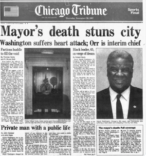
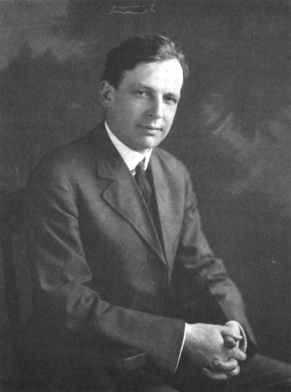

This Date in History examines individuals who are vital in Chicago history. From Big Chicago Labor’s “lady slugger” to the professor who challenged Chicago’s corrupt politics, these November dates figure prominently into Chicago corruption, government and commerce. Learn about Mr. Merriam, Mayor Washington and a farm girl who became the boss of Chicago’s teacher’s union.
Margaret Haley
Born November 15, 1861 in Joliet, Illinois

This woman, the first of six children born to an Irish immigrant couple and raised on a farm, grew up to be the leader of what Chicago historian, author and scholar Jane Skinner Sawyer once described as the boss of “one of the country’s most militant unions, the Chicago Teachers’ Federation.”
Margaret Haley’s father, who came to Chicago to work on the Illinois and Michigan Canal, moved the family to a stone quarry when Margaret was 10 years old. Soon thereafter, the girl attended school in a convent. At the age of 16, she began teaching at a country school, then, taught in Joliet before moving to Chicago to teach in 1882. Margaret Haley studied under one of America’s earliest progressive teachers, Francis W. Parker, who was principal of Cook County’s Normal School. Soon, Haley was elected district vice-president of the Chicago Teachers’ Federation, where she campaigned to tax businesses, put schools under city ownership and control and expand “teacher benefits.” Haley also championed an elected school board and women’s suffrage.
By 1901, Margaret Haley had decided to stop teaching pupils in the classroom. By 1902, teachers’ union members elected to affiliate with the Chicago Federation of Labor. The mayor of Chicago, meanwhile, appointed “one of the most progressive school boards in Chicago history,” consisting of women, reformers and activists. Controversy followed, leading to Chicago’s newly elected mayor, William Hale Thompson, making the case against Haley and labor unions in 1915. In 1924, when a superintendent of Chicago’s schools abolished advisory teachers' councils, Haley, described as “combative” and known throughout Chicago as “Lady Labor Slugger,” became adamant, advocating for teacher pensions, what later became known as tenure for all teachers regardless of merit, and teacher union membership for all, including members who, like Haley, were no longer teaching.
Controversy followed, again, and, in May of 1916, the American Federation of Teachers was formed and Haley was designated as the Chicago Teachers’ Federation’s new national organizer. The following year, Chicago’s Teachers’ Federation withdrew from the American Federation of Teachers after the Illinois Supreme Court granted the Chicago School Board autonomy to hire or fire a teacher. One day later, Illinois Governor Frank Lowden signed the Otis law, which affected only the city of Chicago, granting Chicago teachers tenure. In 1937, a new organization was formed, the Chicago Teachers Union, which the Teachers’ Federation, consisting of female grade school teachers, refused to join, “clashing,” according to Sawyer in Chicago Portraits: Biographies of 250 Famous Chicagoans (Loyola University Press 1991), “with high school unions, including the Chicago Federation of Men Teachers and the Federation of Women High School teachers.”
Margaret Haley, demanding the same salaries for elementary school as high school—an unpopular position—was embroiled in “bitter labor disputes,” which led to the Chicago Teachers’ Federation’sdissolution. Haley, who died of heart disease in 1939 at the age of 77, began her autobiography: “I never wanted to fight.”
Harold Washington
Died on November 25th, 1987 in Chicago
Do you remember where you were when Chicago Mayor Harold Washington died? The date was November 25th, 1987. The mayor died in his office. The election of Harold Washington as Chicago’s first black mayor in 1983 made national headlines in the early Eighties. Washington, born in Cook County Hospital in 1922, was the fourth child of Roy and Bertha Washington.

Washington once described his father, a lawyer, minister and Democrat machine ward committeeman, as the “one and only hero in my life.” Roy Washington attended law school at night, working full time in the Union Stockyards, instilling a passion for learning in young Harold, whom June Skinner Sawyer writes “started reading before he was four years old.” Washington spent formative years in residence at several South Side homes—i.e., 3936 South Grand Boulevard, across from the Grand Terrace nightclub, 3936 South Parkway, 4507 South Vincennes Avenue, 4444 South Indiana Avenue and 111 East 44th Street—graduating from DuSable High School. In 1940, he got a job in the freezer department packing meat for Wilson and Company. Later, he enlisted in the United States Army.
Returning to Chicago, Harold Washington enrolled at Roosevelt College, then the city’s new institution with open enrollment for students who were black. In 1948, Washington was unanimously elected class president and, in 1952, he graduated from Northwestern University Law School. Admittance to the Illinois bar followed. In 1954, following his father’s political path, Harold became a lawyer for the Third Ward Democratic Organization and was groomed by political boss Ralph Metcalfe to revive an organization called the Young Democrats, whose purpose was to steer “young professionals into Chicago machine politics.”
In 1964, Harold Washington was elected to the Illinois House of Representatives. During those years, he gained a non-committal reputation on key issues, attempting to straddle between independence and Democratic Party loyalty, sponsoring or co-sponsoring legislation to prohibit realtors, banks and savings and loan associations from discrimination on the basis of race, skin color or creed. “In 1969, a year after the assassination of Martin Luther King in Memphis,” Skinner Sawyer writes, “Washington introduced legislation to celebrate King’s birthday in Illinois.” Governor Dan Walker signed the bill into law in 1973.
When Mayor Richard J. Daley died in 1976, Alderman and Chicago City Council President Pro Tempore Wilson Frost announced that he was acting mayor of the city, adhering to the line of succession. But other Daley supporters refused to accept Frost, who was black, as mayor, locking the door to the late mayor’s city hall office and installing guards outside to discourage intruders. When Chicago’s city council convened the following day, members had elected a white alderman, Michael Bilandic of Chicago’s 11th Ward, by a vote of 45 to 2.
Outraged at the sidelining of Alderman Frost, Chicago’s top black Democrats formed the Committee for a Black Mayor, which included the Reverend Jesse Jackson, Metcalfe and Cecil Partee, which assembled a list of potential mayoral candidates, among whom were Roland Burris, Wilson Frost—and, not surprisingly, Jackson, Metcalfe and Partee—and Harold Washington.
After secretive deliberation, the Committee for a Black Mayor designated Harold Washington as their pick for Chicago’s mayor. During a special mayoral election in April of 1977, Washington received 11 percent of the vote. Black voters did not support Washington because they didn’t believe he could win a general election, Sawyer writes, and “white voters didn't know who he was.” The black community pulled away from Chicago’s Democratic Party machine. In 1980, Washington defeated an incumbent congressman from the first congressional district of Illinois. Washington was reelected to a second term in 1982.
Washington, who was enjoying his work in Congress, reluctantly agreed to run for mayor of Chicago and he defeated incumbent mayor Jane Byrne and the late Mayor Daley’s son, State’s Attorney Richard M. Daley, in the Democratic primary.
In a historic and competitive general mayoral election campaign, Republicans nominated Bernard Epton, a liberal, Jewish Illinois state legislator and U.S. Army veteran—he’s flown 25 B-17 missions over Nazi Germany in World War Two as a radar navigator, twice earning the Distinguished Flying Cross—who had represented Hyde Park since 1969. Rep. Epton, with a track record of opposing racial discrimination in insurance, vigorously campaigned against Washington—who, it was disclosed, had been convicted of failure to file his federal income tax forms for four years, serving 36 days in Cook County Jail in 1972. Washington won a close contest in Chicago’s mayoral election, becoming Chicago’s first black mayor.
Mayor Washington’s first term was dominated by “squabbles within the Democratic Party” over race-based laws mandating what was known as “affirmative action,” pitting Washington against his arch-rival, Alderman Edward “Fast Eddie” Vrydolyak, Chicago’s 10th Ward alderman. Mayor Washington eventually gained control of Chicago’s city council and campaigned for re-election. Mayor Washington died in office of a heart attack in November of 1987, having served four years and seven months asmayor of Chicago, enacting laws favoring labor unions in city hiring and tenants over property owners. Chicago’s DuSable Black History Museum pegs Harold Washington’s election as a turning point which catapulted Chicago as a center for black political power, accelerating the rise of the community activist, Barack Obama, elected U.S. president in 2008.
Charles E. Merriam
Born on November 15, 1874 in Iowa

An Iowan, Charles E. Merriam, born in a town called Hopkinton, also challenged Chicago’s Democratic Party machine as a progressive reformer at University of Chicago—and he lost, over and over and over—and didn’t stop arguing against corruption in Chicago government. Merriam, who eventually was elected as a Hyde Park alderman, represented what was once Chicago’s Seventh Ward (from 1909 until 1911, then, again, from 1913 through 1917).
As the leader of a commission investigating Chicago’s expenditures, he proved fraud by Chicago’s top Democrats, various aldermen and ward organization bosses. Chicago’s City Council finally cut the commission’s investigation funding. A businessman named Julius Rosenwald defied the Chicago government and privately financed the investigation.
Charles Merriam, a University of Chicago political science professor who later died in Rockville, Maryland at the age of 97, was once considered a top Chicago economist. Professor Merriam “taught a liberal, some would say radical, brand of political theory, to generations of college students,” wrote June Skinner Sawyer in Chicago Portraits: Biographies of 250 Famous Chicagoans (Loyola University Press 1991).
On its centennial celebrations website, the University of Chicago remembers Merriam as being “intrigued by the methodology he saw emerging in the fields of philosophy, sociology, psychology, and anthropology” and having “maintained his [conviction] that industrialization and science would enhance rather than destroy the role of citizen participation in public affairs.” Educated at universities in Paris, Berlin and Iowa’s Lenox College, as well as the University of Iowa, Merriam earned a doctorate in political science from Columbia University in 1900, the same year he came to Chicago and was hired to to teach at the University of Chicago.
Nine years later, he was elected alderman from the Seventh Ward—then located on Chicago’s far south side, extending from 71st Street on the south to 51st Street on the north, State Street on the west, and Lake Michigan on the east—and, by 1911, was named chairman of the political science department and campaigning for mayor of Chicago as a Republican. Merriam nearly won, narrowly defeated by Democrat Carter Harrison II, who later became known for shutting down a popular brothel owned by two sisters. Merriam was re-elected to his Seventh Ward position in 1912 and remained in office until 1917. In 1919, he opposed William Hale Thompson in the Republican primary. Merriam, again, was defeated.
Merriam called for abolition of Chicago’s political patronage system, proposing improvements in city services, urging consolidation of police, medical, fire, water, drainage, recreational and judicial services of both Chicago and Cook County government. He advocated adoption of a city charter, separate from the state of Illinois, claiming that the city ought to control its own finances and proposing a municipal court system to replace justice of the peace courts. Merriam also served the United States of America during the Great War as a captain in the United States Army Signal Corps. As vice-chairman of President Herbert Hoover’s Commission on Social Trends and as a member of President Franklin Roosevelt’s National Planning Board, Merriam was involved in conceiving the Democrats’ Social Security program. Merriam wrote books on political theory, philosophy and social reform. Merriam, who resided at 6041 South University Avenue, retired from University of Chicago’s faculty in 1940. Twelve years later, he suffered a stroke and died in 1953. Two years later, his son, Robert, campaigned as a candidate for mayor of Chicago. Robert Merriam was defeated, too, by Richard J. Daley.
Sources: University of Chicago; Chicago Portraits: Biographies of 250 Famous Chicagoans (Loyola University Press 1991) by June Skinner Sawyer; foreword by Bill Kurtis; DuSable Black History Museum; Brittanica; Chicago Reporter